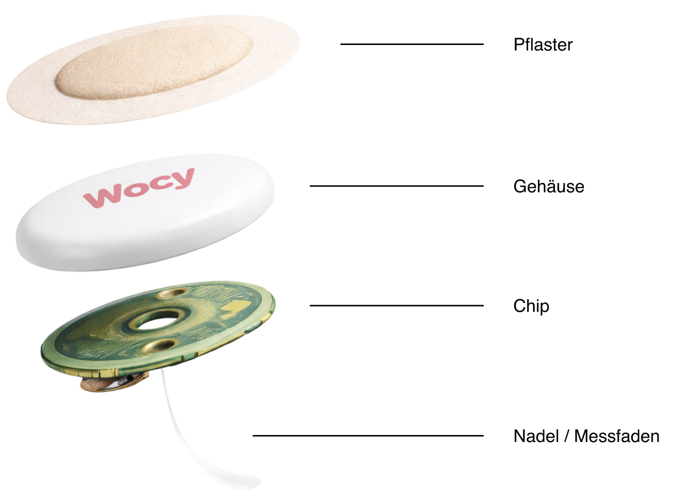
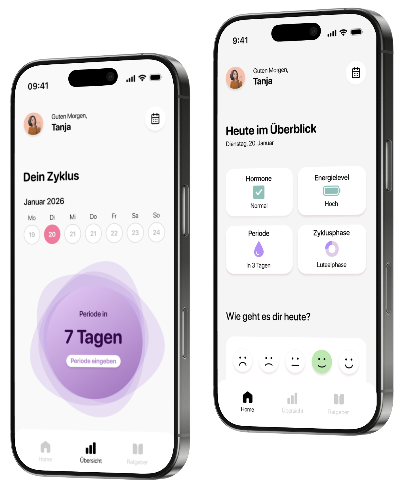

Wocy
Overview
Die Menopause ist geprägt von komplexen, meist unsichtbaren hormonellen Veränderungen. Wocy erfasst diese Prozesse und übersetzt sie in zugängliche, verständliche Informationen, um Nutzerinnen im Alltag zu unterstützen und ihnen mehr Kontrolle zu ermöglichen.

Konzept
In der Research-Phase haben wir uns mit hormonellen Erkrankungen beschäftigt, um zu verstehen, inwiefern hormonelle Daten zur Identifikation körperlicher Zustände genutzt werden können. Dabei zeigte sich, dass die wissenschaftliche Datenlage zwar umfangreich ist, die Interpretation jedoch aufgrund komplexer und individueller Zusammenhänge oft schwierig bleibt.
Define
In der Define-Phase wurde der Fokus bewusst von hormonellen Erkrankungen gelöst, um stattdessen zu identifizieren, welche Hormone verlässlich messbar sind und für welche Zielgruppen daraus relevante Anwendungsmöglichkeiten entstehen.
Ergebnis
Wocy besteht aus einem Gadget und der dazugehörigen app. Das Pflaster misst kontinuierlich Hormone und sendet es an die App.


Projektergebnis